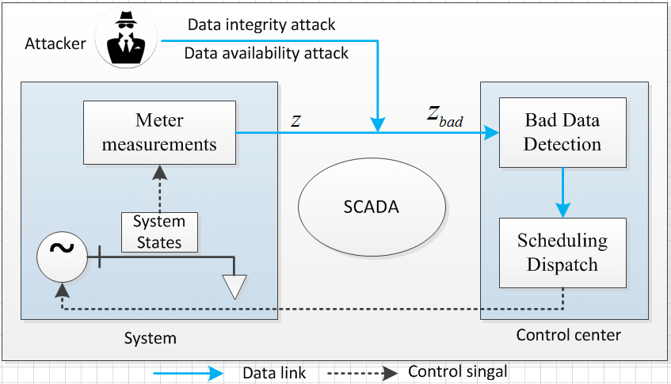
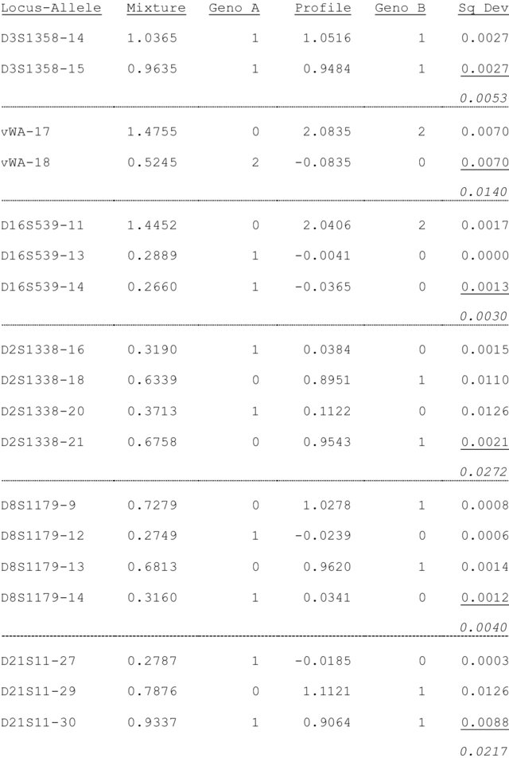
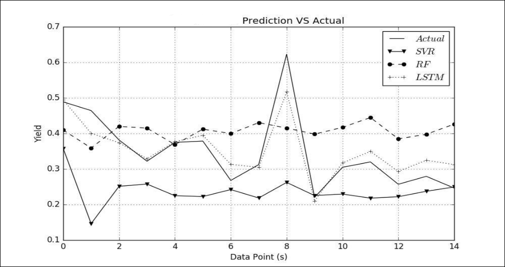
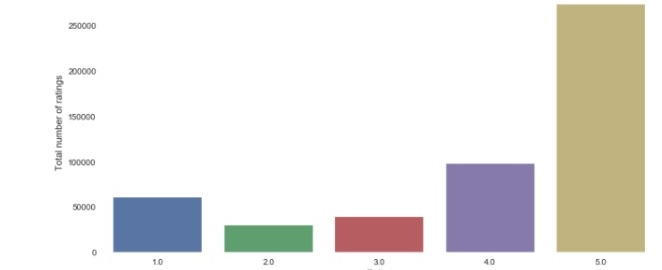

Publications

|
Multi-sensor Wearable for Child Safety
|
|  |
Cyber-Attack in ICT Cloud Computing System
|
|  |
A Mathematical Model
To Resolving Mixed DNA Samples By Using Linear Mixture Analysis
|
|  |
Greenhouse
Monitoring System Using Deep Learning & Internet of things
|
|  |
A Research Paper on Data Analysis (rating distribution, time series
analysis) & using The Recommendation Algorithm with Cosine similarity, Correlation matrix and SVD
on
Amazon dataset
|